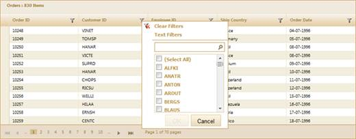

Through GridPropertiesModel
To add a filter to the application using
GridPropertiesModel:
1. Create a model in
the application (Refer to Getting
Started>Adding a Model to the Application).
2. Add the following
code in the Index.aspx file to create the Grid control in the view.
|
View [ASPX]
<%=Html.Syncfusion().Grid<Order>("FilteringGrid","GridModel", columns => {
columns.Add(p => p.OrderID).HeaderText("Order ID");
columns.Add(p => p.CustomerID).HeaderText("Customer ID");
columns.Add(p => p.EmployeeID).HeaderText("Employee ID");
columns.Add(P => P.ShipCountry).HeaderText("Ship Country");
columns.Add(p => p.OrderDate).HeaderText("Order Date").Format("{0:dd-MM-yyyy}");
})%>
|
|
View [cshtml]
@(new HtmlString(Html.Syncfusion().Grid<Order>("FilteringGrid","GridModel",
columns => {
columns.Add(p => p.OrderID).HeaderText("Order ID");
columns.Add(p => p.CustomerID).HeaderText("Customer ID");
columns.Add(p => p.EmployeeID).HeaderText("Employee ID");
columns.Add(P => P.ShipCountry).HeaderText("Ship Country");
columns.Add(p => p.OrderDate).HeaderText("Order Date").Format("{0:dd-MM-yyyy}");
}).ToString())) |
3. Create a
GridPropertiesModel in the Index method. Use the
AllowFiltering property to enable the filtering feature.
|
[C#]
/// <summary>
/// Used for rendering the grid initially.
/// </summary>
/// <returns>Veiw page; it displays the grid.</returns>
public ActionResult Filtering()
{
GridPropertiesModel<Order> gridModel = new GridPropertiesModel<Order>()
{
DataSource = new NorthwindDataContext().Orders,
Caption = "Orders",
AllowPaging = true,
AllowSorting = true,
AllowFiltering = true,
AutoFormat = Skins.Sandune
};
ViewData["GridModel"] = gridModel;
return View();
}
|
4. In order to work
with filtering actions, create a Post method for Index actions and
bind the data source to the gind the data source to
gBuilderon d make the change.application, dependecies nt.art to the end of this
document.rid as shown in the following code sample.
|
[C#]
/// <summary>
/// Paging requests are mapped to this method. This method invokes the HtmlActionResult
/// from the grid. The
required response is generated.
/// </summary>
/// <param name="args">Contains paging properties.</param>
/// <returns>
/// HtmlActionResult returns the
data displayed on the grid.
/// </returns>
[AcceptVerbs(HttpVerbs.Post)]
public ActionResult Filtering(PagingParams args)
{
IEnumerable data = new NorthwindDataContext().Orders;
return data.GridActions<Order>();
}
|
5. Run the
application. The grid will appear as shown in the following screenshot.

Figure 122: Grid with Filter Option
More:
 Filter
Customization
Filter
Customization